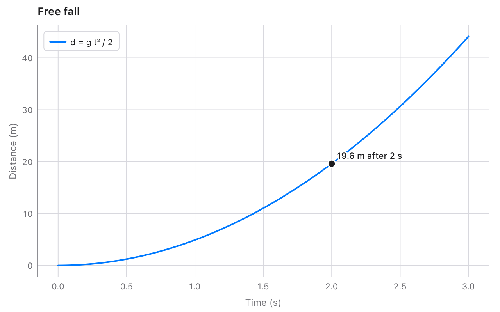

A function and a point
Plot y = f(x) from a block, and label one point on it.
Code
var c = chart.Chart(title: "Free fall", xLabel: "Time (s)", yLabel: "Distance (m)")
c.function(from: 0, to: 3, name: "d = g t² / 2") { t in 9.81 * t * t / 2.0 }
c.point(x: 2, y: 19.62, label: "19.6 m after 2 s")
c.savePNG("fall.png")